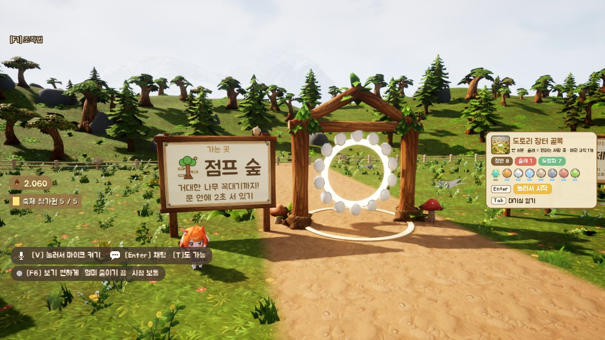
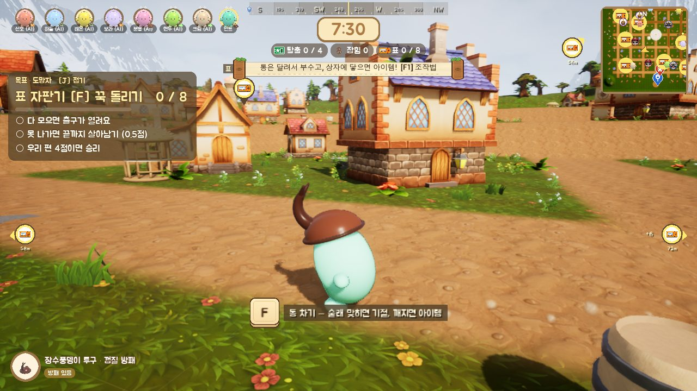
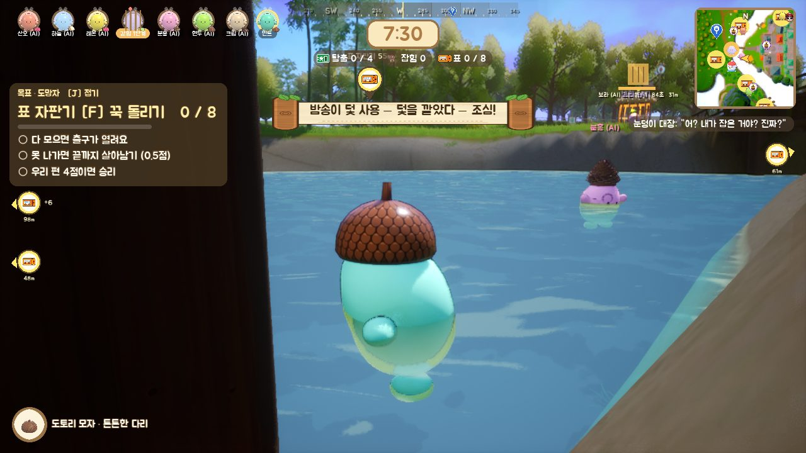

오늘은 뭐 하고 놀까?
마을 광장에서 친구들을 만나고, 팻말을 따라가면 놀거리가 나와요.

점프 숲
거대한 나무 꼭대기까지 올라가요. 떨어지면?

술래잡기
표 자판기를 다 돌리면 출구가 열려요. 술래한테 잡히면 우리 안으로 쏙.

숲의 주인
5단계를 처음부터 한 번에 오르면 받는 칭호예요.

마을 광장
다들 여기서 만나요. 팻말 앞에 서면 어디로 가는지 그림으로 보여 줘요.
끌어올리기 그물
먼저 올라갔다면 그물을 내려 보세요. 아래 친구를 끌어올릴 수 있어요. 단, 친구가 가 봤던 단계까지만이에요.
절대 누르지 마시오
점프 숲 어딘가의 빨간 버튼. 누르면 대포 아니면 폭탄이에요. 그래도 저장한 데까진 안 날아가요.




안녕하세요, 우현제입니다
외토리라는 이름으로 이 게임을 혼자 만들고 있어요. 10년 동안 음악을 하다가, 올해 2월에 처음 게임 공부를 시작했습니다.
코드와 그림은 대부분 AI(Claude Code, ComfyUI)가 만들어요. 저는 뭘 만들지 정하고, 직접 해 보고, 이상하면 고칩니다. 친구들이 시험판을 하는 걸 옆에서 보는 게 제일 재밌어요.
만들면서 정한 것들
결정할 때마다 날짜, 이유, 안 고른 쪽을 같이 적어 둬요. 그중 몇 개예요.
원래는 술래잡기가 중심이었어요. 그런데 시험하러 온 동료 셋이 술래잡기를 한 판 하고는 점프 맵만 4시간 30분을 했어요. "떨어져도 열이 안 받는다"면서요.
그래서 점프 맵도 술래잡기만큼 키우기로 했고, 지금은 놀거리끼리 서로 이어지게 만드는 중이에요. 한 데서 얻은 게 다른 데 갈 이유가 되면, 금방 질리지 않을 거라고 봤어요. 제작(크래프트) 요소는 아직 다듬고 있고, 동양 마을처럼 한국 느낌도 넣고 있어요.
처음 완주할 때만 크게 주고, 다시 깨면 줄였어요. 한 자리에서 도토리만 긁어모으긴 어렵게, 대신 하루에 한 번은 들를 이유가 있게요.
숫자는 표 파일에 따로 빼 둬서 코드를 안 건드리고 고쳐요.
도토리 50개로 한 번, 꾸밈 아이템 중 하나가 나와요. 비싼 건 드물게 나오고(1 / 값^1.5), 확률은 화면에 다 보여 줘요. 겹치면 그 아이템 값의 1/10을 돌려받아요.
도토리는 게임을 해서만 모을 수 있고, 돈으로는 안 팔아요.
| 날짜 | 정한 것 | 왜 | 안 고른 쪽 |
|---|---|---|---|
| 10/14 | 그물은 친구가 가 본 단계까지만 | 갈고리는 잘하는 사람만 써서, 서툰 친구도 도울 방법이 필요했음 | 아래 사람 끌어올리기 금지 |
| 10/14 | 빨간 버튼을 눌러도 저장은 안 지움 | 장난은 살리고, 열심히 오른 사람이 다 잃지는 않게 | 그 단계 전원 날림 |
| 10/15 | 쿼터뷰에서 화면 고정 뺌 | 고정하면 캐릭터가 화면 밖으로 사라지고, 가장자리 이동은 멀미가 남 | 화면 고정 유지 |
| — | 토끼 이름 "토토" → "또또" | 한국에선 "토토"가 스포츠 내기로 읽힘 | 그대로 두기 |
AI 작업창을 역할별로 여러 개 띄워 동시에 돌려요(제작, 마케팅, 번역, 음악, 스팀 설정). 서로 같은 파일을 고치거나 그래픽카드를 같이 잡는 일이 생겨서 이런 걸 만들었어요. 만드는 건 AI가 했고, 뭘 막고 뭘 검사할지는 제가 정했어요.
공부하면서 만든 것들
다 만들고 다시 해 보면서, 아쉬운 점도 같이 적었어요.
EchoBreaker
낮게 "음—" 하고 울리면 문이 열리고, 크게 말하면 경비병이 쫓아와요. 처음엔 소리가 크면 열리게 했더니 에어컨 소리에도 열려서, 소리의 크기 대신 낮은 소리가 얼마나 섞였는지로 바꿨어요. 제 목소리를 재 보고 판정 대역을 80~260Hz에서 70~190Hz로 좁혔어요.
다음엔 음악 박자에 맞춰 말을 넣는 리듬 요소를 붙여 보고 싶어요. · GitHub
CatLoopDefense
50줄짜리 표에 "몇 웨이브부터, 몇 웨이브마다, 얼마씩 세지는지"를 넣어 200웨이브를 만들었어요. 사람이 늘면 적도 늘고, 한꺼번에 나오는 적 수엔 상한을 뒀어요.
다시 해 보니 길이만 늘고 재미는 약했어요. 다시 만든다면 웨이브 사이에 증강 3개 중 하나를 고르고, 유닛을 5개 후보 중에서 뽑게 할 거예요.
ProjectPG
팀이 모은 오브젝트 152개를 9가지 틀과 표 한 장으로 정리했어요. 맵을 세 구역으로 나눠 약한 무리, 센 몬스터, 보스를 따로 두었어요.
맵 생성·캐릭터·인벤토리는 팀원이 맡았어요.
DirectX 11 게임 3종
대사, 선택지, 레벨 진행을 데이터로 빼서 같은 엔진으로 장르를 바꿔 봤어요.
리듬 게임은 원이 바깥으로 퍼지게 하고, 숫자 패드 1~9를 화면 9칸에 맞추면 더 또렷했을 것 같아요.